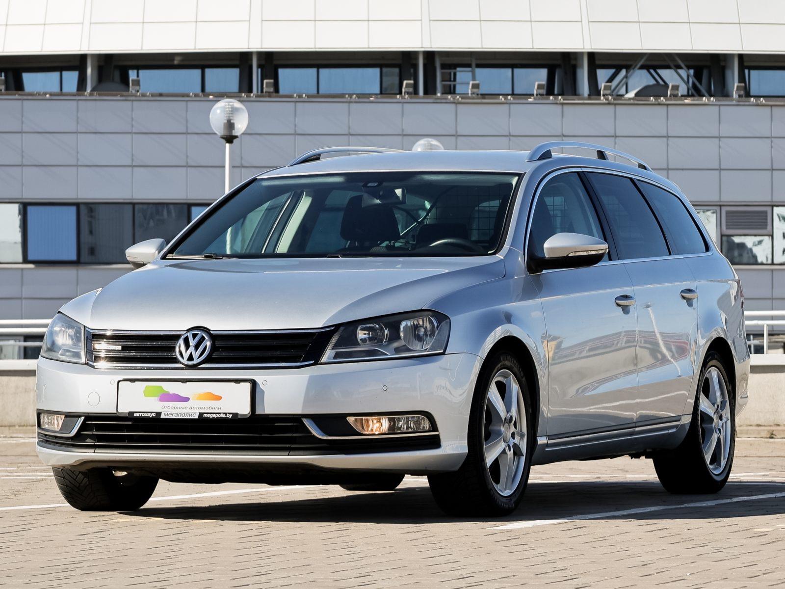
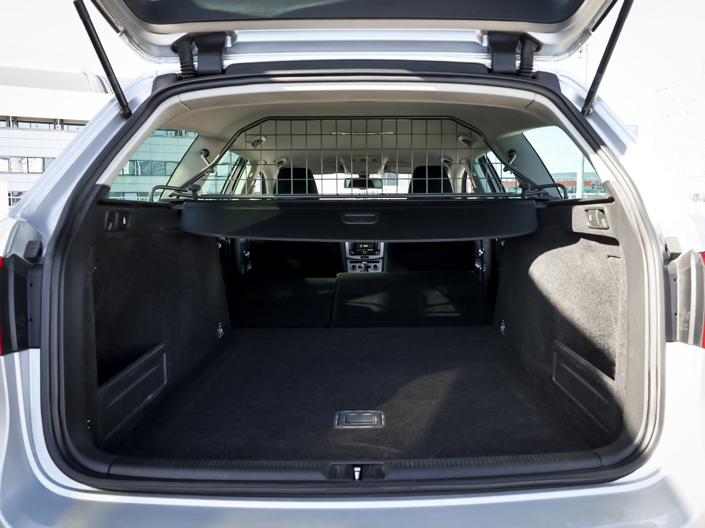

11 000 $
Нормальные деньги за живой 2.0 на механике, пробег до ~250 тысяч, ремень сделан, кузов без серьёзной рихтовки. За 1.6 или робота — уже верх.
Беларусь · 12 ноября 2026 · бюджет до 15 000 $
Конкретного VIN нет, поэтому это вердикт про такие объявления, не про одну машину. Хорошая комплектация на четырнадцатилетнем Пассате цену почти не двигает. Кожа не стоит остатка бюджета.
1 · мотор
140 сил, код CFFB, 320 Нм. Трасса около 5–5,5 л, смешанный 6–6,5. 170 и 177 (CFGB, CFGC) — тот же мотор, если экземпляр живее, а не ради лошадей: маховик и турбина у них расходнее.
Мимо. 1.6 TDI на 105 сил и бензин 1.8 TSI. Бензин в РБ дешевле, 7 500–10 000 $, из‑за цепи и масложора.
2 · коробка
Шесть ступеней. Сальники приводов к 200 тысячам иногда текут, коробка живёт. Слабое место — сцепление и двухмассовый маховик. Мокрый робот DQ250 на 2.0 допустим, если масло меняли каждые 40–60 тысяч и нет тычка с первой на вторую.
Мимо. Сухой робот DQ200. Он частый на 1.6 и на бензине 1.4 / 1.8.
3 · бумага
Дизели B7 — ремень, не цепь. Для нашей солярки 100–120 тысяч или 5–6 лет, не европейские 210. Машине 2012 года ремень по возрасту уже вышел, даже если пробег небольшой. Масло — раз в 8–10 тысяч, не раз в 30.
Нет заказ-наряда — сразу минус 300–500 $ из цены. Комплект с помпой.
Позвонить и спросить
Пока трёх ответов нет, «хорошая комплектация за одиннадцать» — разговор ни о чём.
70 литров у всех дизелей этого кузова. На трассе у 140 сил выходит порядка тысячи км до лампы. Зимой короче.
У Пассата это сильная сторона. Шильдик сам ничего не гарантирует: в этих деньгах легко попадает 1.8 TSI.
Дешевле только солярка, и в основном на трассе. Ремонт volkswagenовский. После покупки держать 1 000–1 500 $.
2012 — середина поколения 2010–2014. Это тот же B6 с другим лицом. 2013–2014 в тех же 11–13 тысячах имеет смысл, если экземпляр живее.

Рынок РБ · 12 ноября 2026
Дизельные B7 2011–2014 годов с пробегом 200–300 тысяч кучно стоят 10 600–12 500 $. Салоны держат верх и почти всегда оставляют 500–1 000 $. Если под капотом 1.6, в ногах робот или на одометре 280+ без бумаг — разговор начинается с 9 500–10 000 $.
11 000 $
Нормальные деньги за живой 2.0 на механике, пробег до ~250 тысяч, ремень сделан, кузов без серьёзной рихтовки. За 1.6 или робота — уже верх.
10 600 $
Единственный живой двухлитровый на ручке около вашей цены. В карточке написано BlueTDI: продавцы часто путают его с BlueMotion. Проверить бачок в нише запаски. Салон — тёмная ткань.
Объявление Дорого13 400 $
Верх вилки. Снят с учёта, контакты в карточке уже пропадали. Цена как ориентир, не как дело.
Объявление Мимо11 950 $
Цена рядом, мотор не тот. В тексте салона бак 70 л и ремень из Голландии 33 тысячи назад — на фото этого нет.
Разобрать фото Мимо11 888 $
На странице 36 400 рублей. Триста тысяч в «хорошей» комплектации — это верх, не середина.
Разобрать фото Продано11 700 $
Годом новее и всё равно те же деньги. «Поновее» внутри бюджета — это тот же B7, не другой автомобиль.
Карточка Мимо10 450 $
Дешевле, потому что это не ваш мотор. Цепь и расход масла.
Объявление Мимо9 300 $
Нижняя кромка Пассатов в этих годах. К дизелю отношения не имеет.
ОбъявлениеЕщё пачка 1.6 TDI 2012–2013, 200–287 тысяч, Гродно, Мозырь и Минск, висела по 11 700–12 000 $. Общий список: все Passat на av.by. Объявления снимают.
До задатка
Первые три пункта закрывают сделку сами. Остальное — чтобы не купить живой мотор в гнилом кузове.
Нужны CFFB, CFGB или CFGC. Бензиновый CDAA — отказ. Если в тексте BlueTDI, под полом багажника должен быть бачок AdBlue. Нет бачка — продавец перепутал название, и это как раз хорошо.
Механика или DQ250 с чеками. DQ200 — отказ. На тесте: прогрев, пробка, переключение 1–2. Стук на холостых и при глушении — маховик, 700–1 400 $.
Дата и пробег. Нет бумаги — торг на комплект с помпой, 300–500 $.
Коррекции форсунок, зольность сажевого, EGR, давление масла, ошибки коробки. Цвет дыма. Вырезанный сажевый с ошибкой на панели — уходить. На техосмотре дымность меряют дымомером.
Толщиномер, пороги, задние арки, металл под подкрылками, пол багажника. Лак тонкий. Особенно если машина зимы провела в Германии, Польше или Прибалтике. Печка должна греть в обе стороны: радиатор снимается вместе с торпедой.
Сверить с белорусскими техосмотрами и историей до ввоза. Честные 180–220 тысяч и живой салон за 11 тысяч — удачный экземпляр. Триста тысяч в богатой комплектации — верх рынка.
Клиренс около 14 см, у BlueMotion ещё ниже: кузов садится примерно на 15 мм спереди и 7,5 мм сзади. Проехать ту колею, по которой он ездит зимой. Замки дверей и лючок бака зимой примерзают, моторчики зеркал и электроручник сдают.
Бак
Седан, универсал и Alltrack с полным приводом. В горловину сверху входит ещё немного. Лючок на правом заднем крыле: по закрытой крышке литраж не прочитать. 4Motion литры не отъедает, он добавляет вес и расход. На резерве маршрут не строить.
2.0 на 140 сил: трасса 5–5,5 л, до лампы порядка 1000 км, если не крутить и не везти полный салон. Зимой закладывайте около литра сверху, тысяча уже не гарантирована. 170 сил при бодрой езде короче на том же баке. 1.6 на трассе около 5 л, в городе до 7, но тяжёлый кузов он тянет слабо.
После покупки не тратить
1 000–1 500 $
Это резерв на ремень, сцепление и подвеску. Не на салон. Городские короткие поездки забивают сажевый и EGR, и тогда «экономный дизель» становится дорогим.
ТНВД ломается редко и дорого: стружка идёт по всей топливной. Держится нормальной соляркой, фильтром раз в 15–20 тысяч и запретом ездить на горящей лампе. На ранних 2.0 до примерно 2011 года, код CBAB, изнашивался привод масляного насоса. CFFB 2012 года уже другой, но интервал масла 30 тысяч этот риск возвращает. Шаровые и сайлентблоки на B7 меняются отдельно от рычага. Вырезанный сажевый формально меняет конструкцию: если дымит, линия Белтехосмотра его не пропустит. B7 — не Логан. Дешевле запущенного бензинового турбо, дороже простого корейского дизеля.
Доказательство по двум салонам
av.by фото наружу не отдал, поэтому здесь кадры Мегаполиса и Автодома. Капота нет ни в одной галерее: ремень, сажевый и течи по снимкам не проверить.
2012 · 1.6 TDI · механика · 241 000 км. Карточка салона




2012 · 1.6 TDI · механика · 306 333 км. Карточка на Разинской


Откуда цифры · только Беларусь
Цены на 12 ноября 2026: av.by, Мегаполис и Автодом. Курс плавает, карточки исчезают, эту машину без VIN никто не осматривал. Кадры скачаны из двух белорусских объявлений. Это разбор для покупки, не отчёт диагностики.